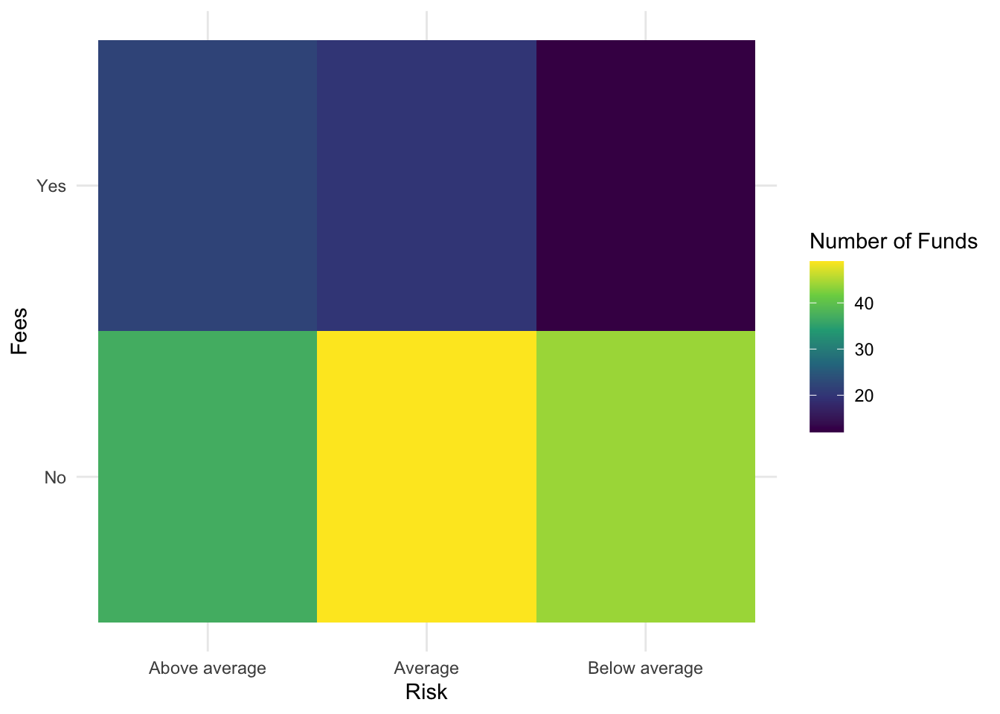
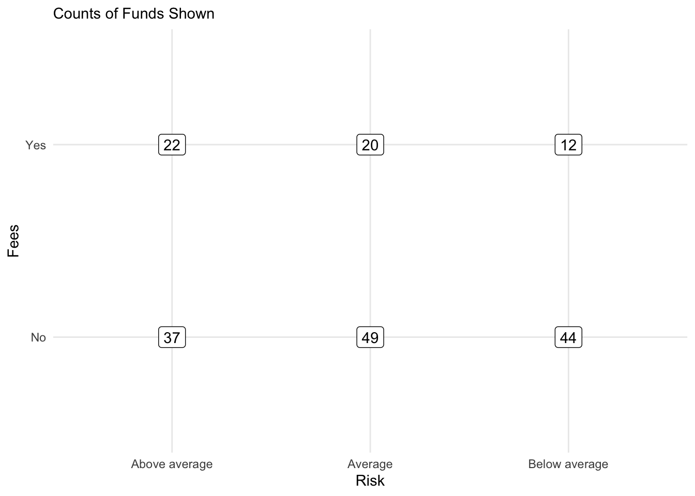
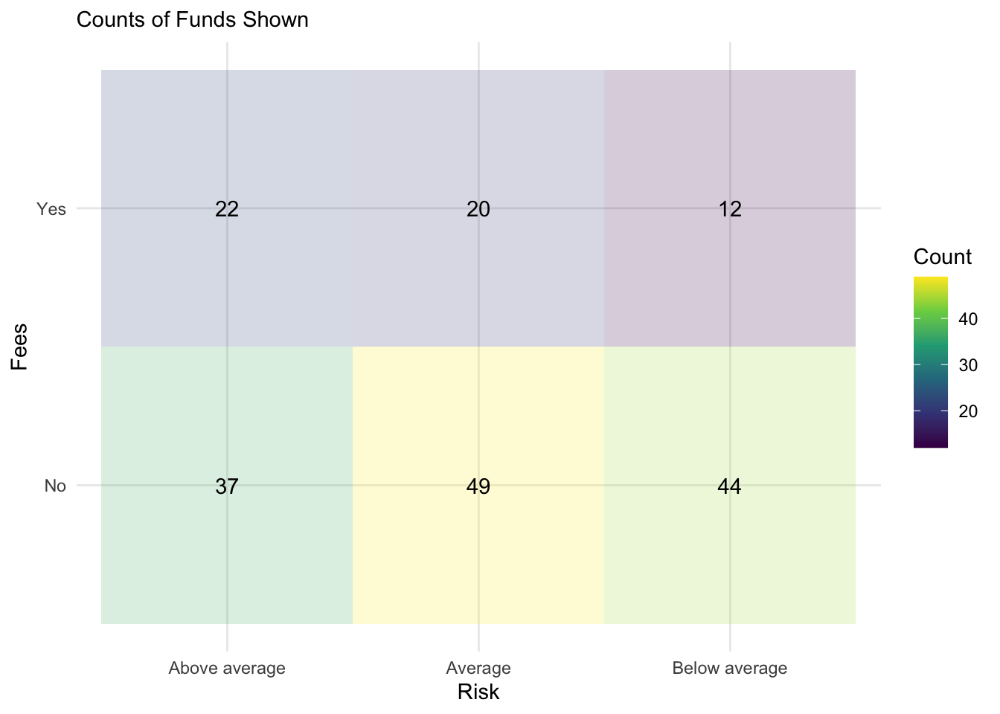
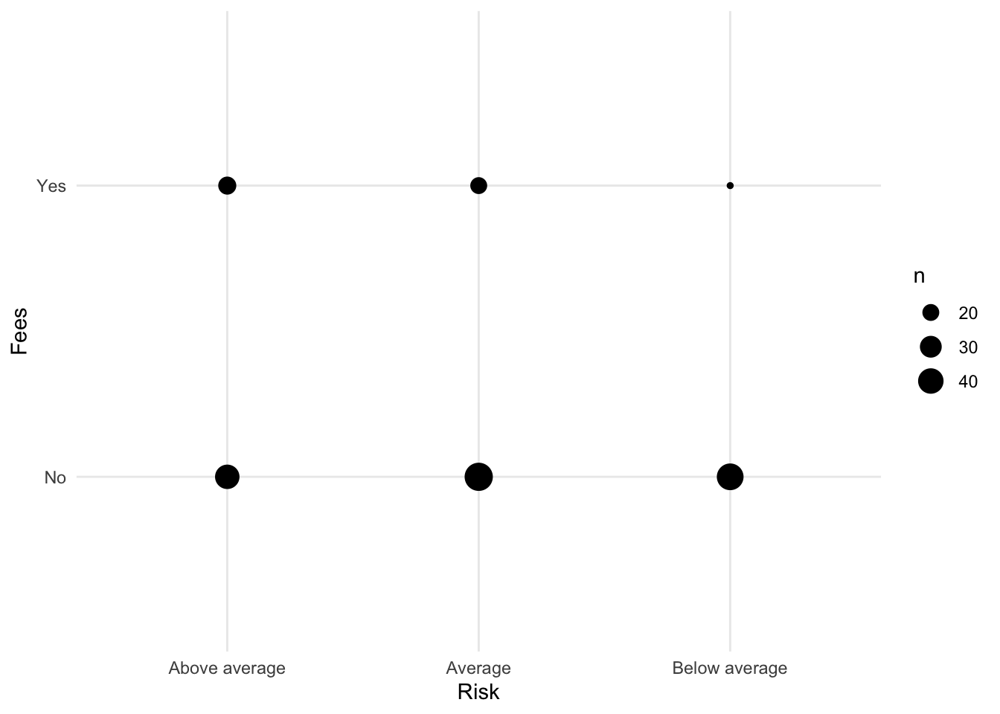
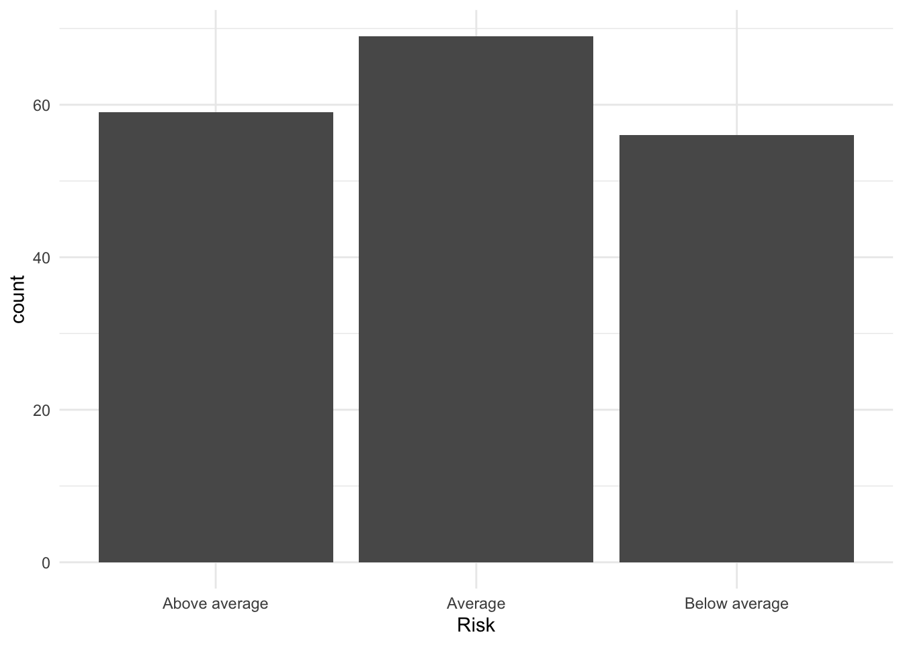
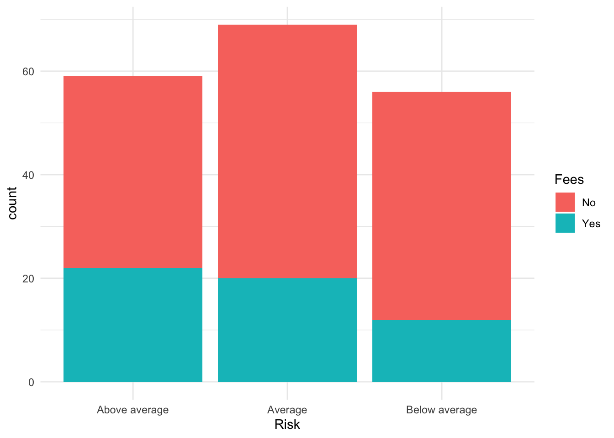
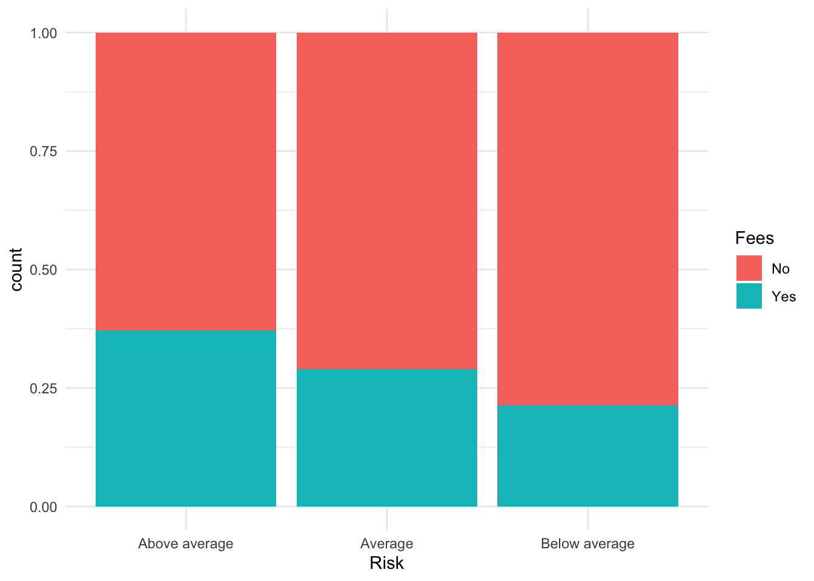

Bonds <- read.csv(url("https://raw.githubusercontent.com/robertwwalker/DADMStuff/master/BondFunds.csv"))Bonds
A dataset for illustrating the various available visualizations needs a certain degree of richness with manageable size. The dataset on Bonds contains three categorical and a few quantitative indicators sufficient to show what we might wish.
Loading the Data
A Summary
library(skimr)
Bonds %>%
skim()| Name | Piped data |
| Number of rows | 184 |
| Number of columns | 9 |
| _______________________ | |
| Column type frequency: | |
| character | 4 |
| numeric | 5 |
| ________________________ | |
| Group variables | None |
Variable type: character
| skim_variable | n_missing | complete_rate | min | max | empty | n_unique | whitespace |
|---|---|---|---|---|---|---|---|
| Fund.Number | 0 | 1 | 4 | 6 | 0 | 184 | 0 |
| Type | 0 | 1 | 20 | 23 | 0 | 2 | 0 |
| Fees | 0 | 1 | 2 | 3 | 0 | 2 | 0 |
| Risk | 0 | 1 | 7 | 13 | 0 | 3 | 0 |
Variable type: numeric
| skim_variable | n_missing | complete_rate | mean | sd | p0 | p25 | p50 | p75 | p100 | hist |
|---|---|---|---|---|---|---|---|---|---|---|
| Assets | 0 | 1 | 910.65 | 2253.27 | 12.40 | 113.72 | 268.4 | 621.95 | 18603.50 | ▇▁▁▁▁ |
| Expense.Ratio | 0 | 1 | 0.71 | 0.26 | 0.12 | 0.53 | 0.7 | 0.90 | 1.94 | ▂▇▅▁▁ |
| Return.2009 | 0 | 1 | 7.16 | 6.09 | -8.80 | 3.48 | 6.4 | 10.72 | 32.00 | ▁▇▅▁▁ |
| X3.Year.Return | 0 | 1 | 4.66 | 2.52 | -13.80 | 4.05 | 5.1 | 6.10 | 9.40 | ▁▁▁▅▇ |
| X5.Year.Return | 0 | 1 | 3.99 | 1.49 | -7.30 | 3.60 | 4.3 | 4.90 | 6.80 | ▁▁▁▅▇ |
Most data types are represented. There is no time variable so dates and the visualizations that go with time series are omitted.
Data Visualization
There are three primary visualizations that we might use for a combination of two qualities. We will have a look at geom_tile(), geom_point(), and geom_bar(aes(fill=)) to visualize these. We can also make use of facet. Let me work with Risk and Fees. I will first display the relevant table.
Building a Table
BTDF <- Bonds %>%
group_by(Risk, Fees) %>%
summarise(Count = n()) %>%
data.frame()`summarise()` has grouped output by 'Risk'. You can override using the
`.groups` argument.BTDF %>%
pivot_wider(names_from = Fees, values_from = Count)# A tibble: 3 × 3
Risk No Yes
<chr> <int> <int>
1 Above average 37 22
2 Average 49 20
3 Below average 44 12The table as a data.frame.
BTDF Risk Fees Count
1 Above average No 37
2 Above average Yes 22
3 Average No 49
4 Average Yes 20
5 Below average No 44
6 Below average Yes 12geom_tile
BTDF %>%
ggplot(., aes(x = Risk, y = Fees, fill = Count)) + geom_tile() + scale_fill_viridis_c() +
theme_minimal() + labs(fill = "Number of Funds")
geom_label a visual table
BTDF %>%
ggplot(., aes(x = Risk, y = Fees, label = Count)) + geom_label() + theme_minimal() +
labs(subtitle = "Counts of Funds Shown")
A Tile Table
BTDF %>%
ggplot(., aes(x = Risk, y = Fees, label = Count, fill = Count)) + geom_tile(alpha = 0.2) +
scale_fill_viridis_c() + geom_text() + theme_minimal() + labs(subtitle = "Counts of Funds Shown")
Raw Data Plots
geom_count()
Bonds %>%
ggplot() + aes(x = Risk, y = Fees) + geom_count() + theme_minimal()
geom_bar(fill=)
Now let us look at the bar plot. First, start with Risk.
Bonds %>%
ggplot() + aes(x = Risk) + geom_bar()
To add Fees to the plot, we can fill the bars.
Bonds %>%
ggplot() + aes(x = Risk, fill = Fees) + geom_bar()
Conditional Probability: (position="fill")
We can also plot this normalized by the number in each category of x so that the plots represent conditional probability.
Bonds %>%
ggplot() + aes(x = Risk, fill = Fees) + geom_bar(position = "fill")